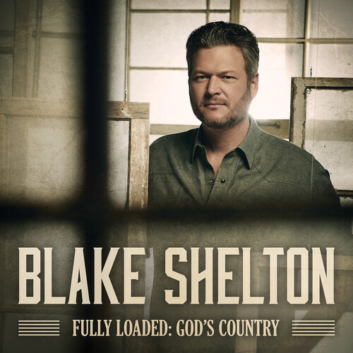

NEW ALBUM OUT NOW
 PLAY NOWBIO
Blake Tollison Shelton (born June 18, 1976) is an American
country music singer and television personality. In 2001, he made
his debut with the single "Austin". The lead-off single from his
self-titled debut album, "Austin" spent five weeks at number one on
the Billboard Hot Country Songs chart. The now Platinum-certified
debut album also produced two more top 20 entries ("All Over Me"
and "Ol' Red").
His second and third albums, 2003's The Dreamer and 2004's Blake
Shelton's Barn & Grill, are gold and platinum, respectively.[1] His
fourth album, Pure BS (2007), was re-issued in 2008 with a cover of
Michael Bublé's pop hit "Home" as one of the bonus tracks. His
fifth album, Startin' Fires was released in November 2008. It was
followed by the extended plays Hillbilly Bone and All About Tonight
in 2010, and the albums Red River Blue in 2011, Based on a True
Story... in 2013, Bringing Back the Sunshine in 2014, and If I'm
Honest in 2016.
As of November 2019, Shelton has charted 40 singles, including
26 number ones, 17 of which were consecutive. The 11th No. 1
("Doin' What She Likes") broke "the record for the most consecutive
No. 1 singles in the Country Airplay chart's 24-year history". He
is an eight-time Grammy Award nominee.
Shelton is also known for his role as a judge on the televised
singing competitions Nashville Star, Clash of the Choirs, and as
a coach The Voice. He has been on The Voice since its inception,
and in six of eighteen seasons (2–4, 7, 11, 13), a member of his
team has won.